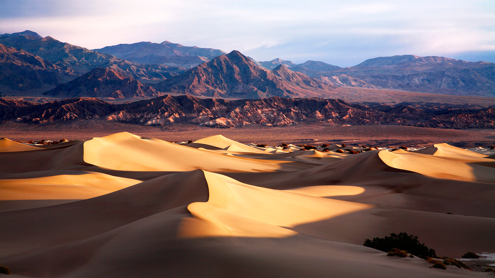

Located in the Mojave Desert, Death Valley National Park is a land of extremes. It is the hottest, driest, and lowest national park in the United States, offering a unique and awe-inspiring experience for visitors.
The park's dramatic landscapes showcase a diverse range of geological formations, from towering mountains and colorful badlands to expansive salt flats and sand dunes. Explore the rugged terrain and be captivated by the raw beauty that has been sculpted by the forces of nature over millions of years.
Death Valley National Park is famous for its record-breaking temperatures, with scorching summers that can reach well over 100 degrees Fahrenheit (38 degrees Celsius). It's essential to come prepared with plenty of water, sun protection, and appropriate clothing. However, even in extreme conditions, the park offers breathtaking vistas and remarkable experiences.
One of the iconic features of Death Valley is the Badwater Basin, the lowest point in North America, sitting at 282 feet (86 meters) below sea level. Walk on the vast expanse of salt flats, marvel at the intricate salt formations, and gaze at the surrounding mountains that seem to rise dramatically from the valley floor.
The park is also home to stunning sand dunes, such as the Mesquite Flat Sand Dunes and the Eureka Dunes. These shifting sands create a mesmerizing landscape that photographers and nature enthusiasts will appreciate. Explore the dunes and watch as the sunlight transforms the colors and textures throughout the day.
Death Valley National Park is not just a desert; it also boasts breathtaking mountain ranges, such as the Panamint Range and the Funeral Mountains. These mountains offer hiking opportunities and scenic drives, where you can enjoy panoramic views of the vast desert below.
Don't miss the chance to visit unique geological formations, such as the Devil's Golf Course, with its jagged salt crystal formations, or the colorful Artist's Palette, where the mineral-rich rocks create a vibrant and surreal landscape. Explore the canyons, such as Mosaic Canyon and Titus Canyon, to witness the geological wonders up close.
Wildlife thrives in this harsh environment, and with a keen eye, you may spot desert bighorn sheep, coyotes, kit foxes, and various reptiles. The park also offers stargazing opportunities, as it is designated as an International Dark Sky Park, allowing for spectacular views of the night sky.
Death Valley National Park is a place where you can truly appreciate the resilience of life in extreme conditions. It's a destination that offers a unique and unforgettable adventure, where you can witness the power and beauty of the desert landscape.